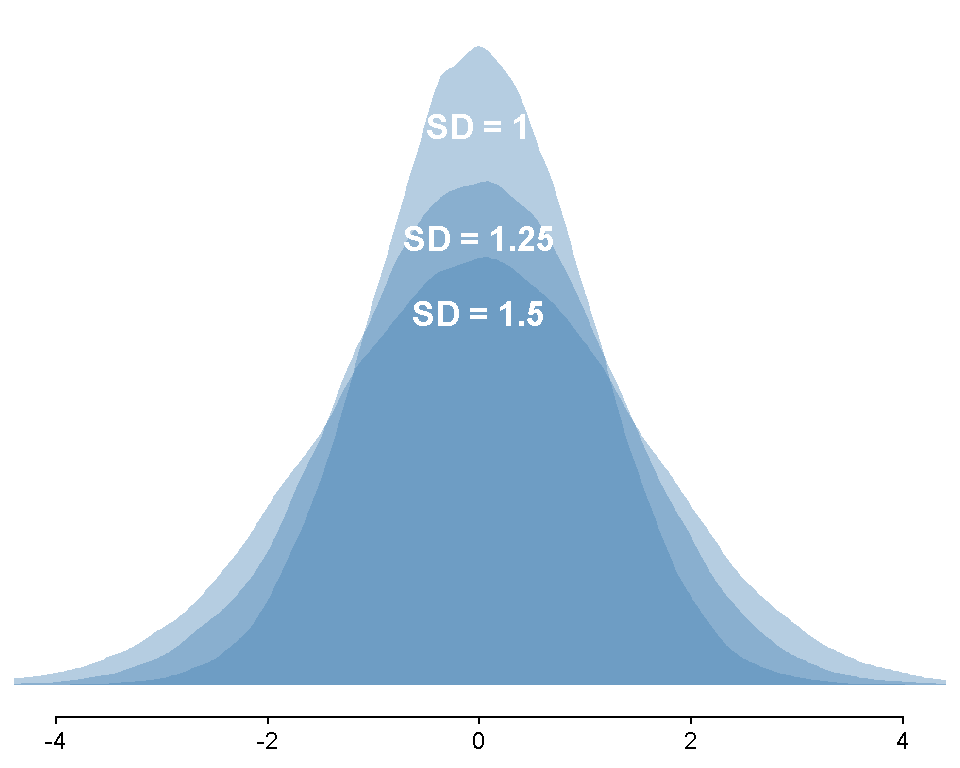
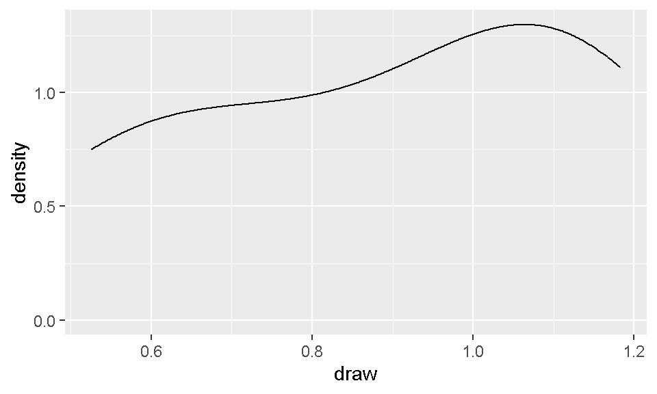
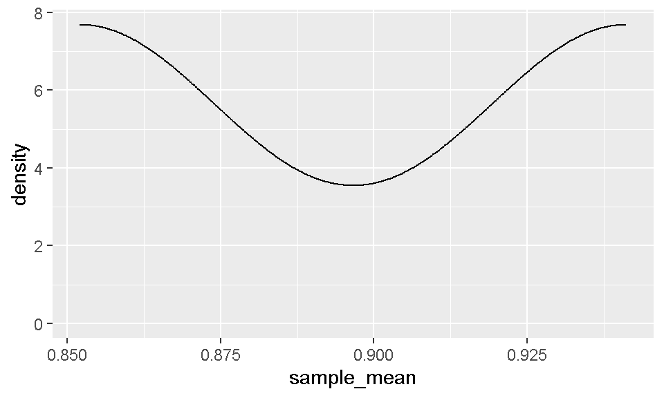
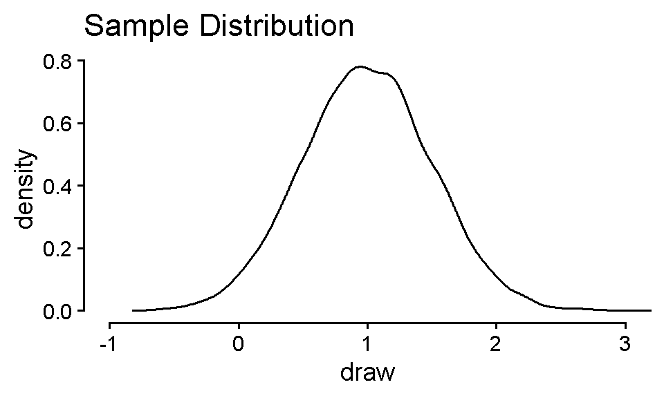
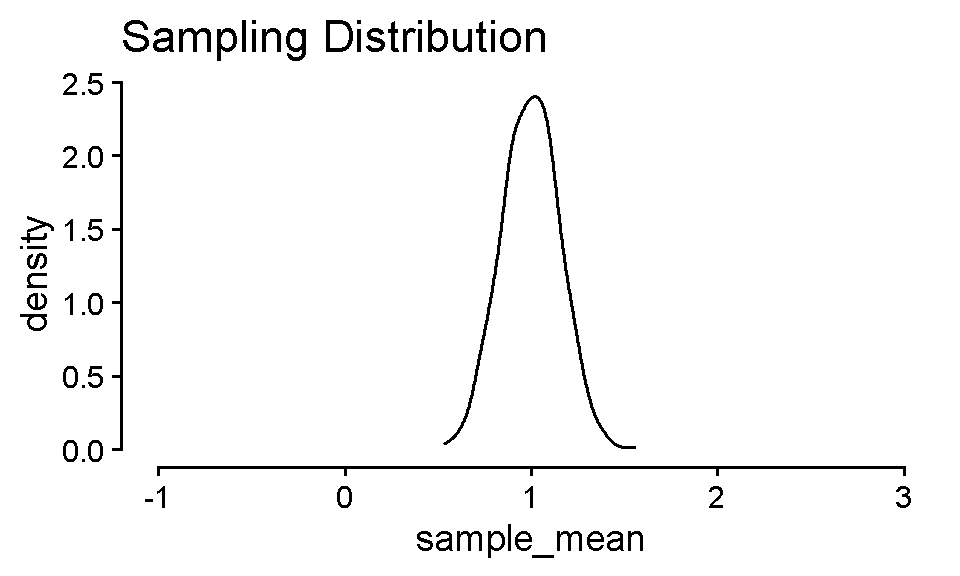
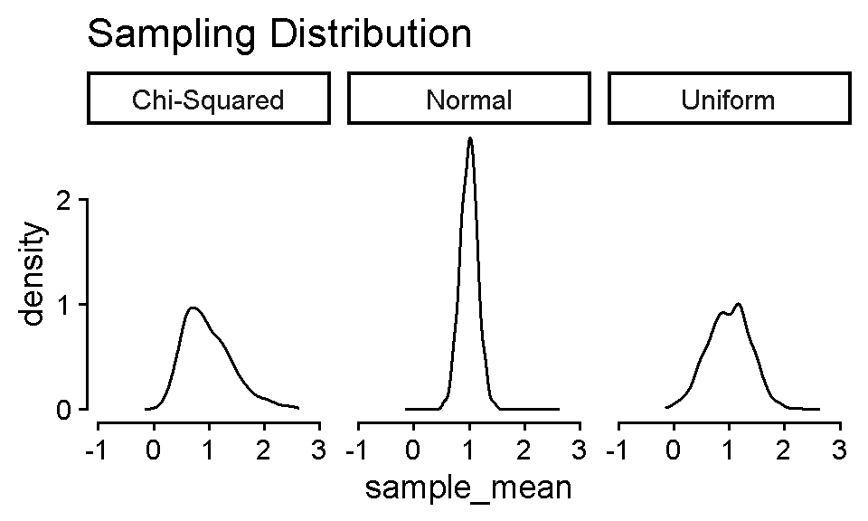
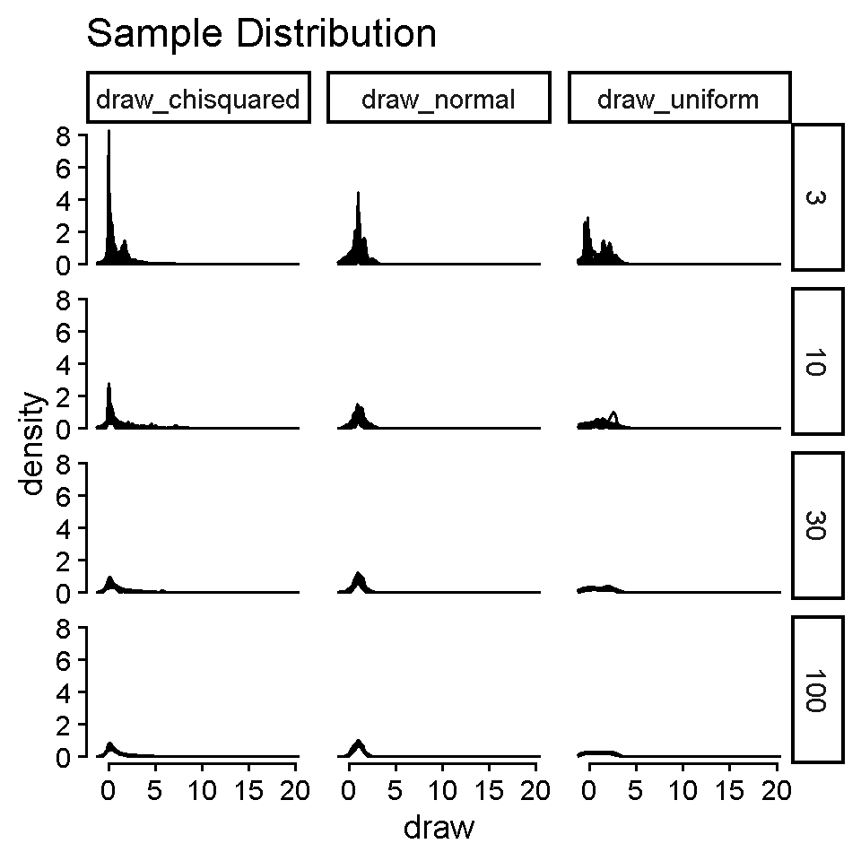
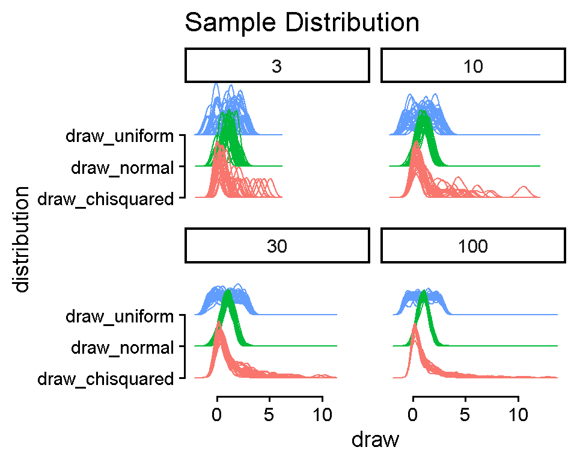
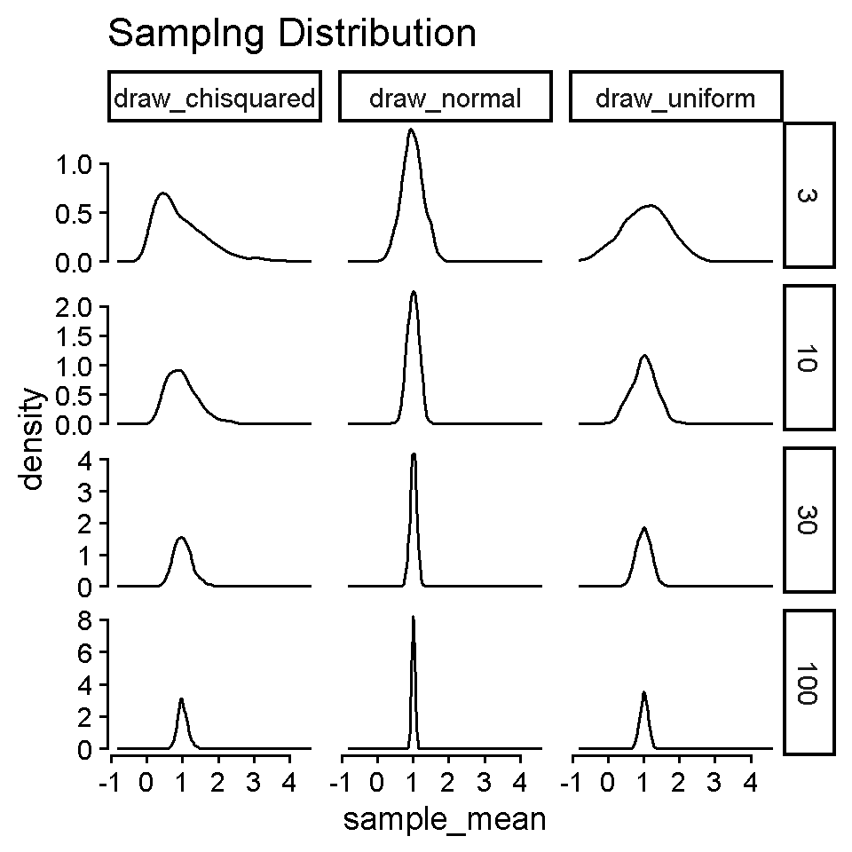
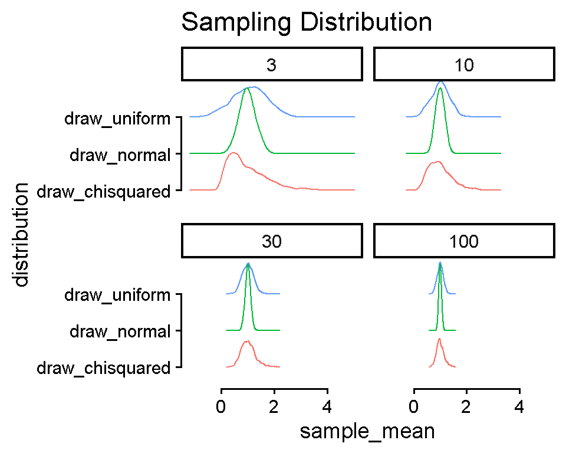

# A tibble: 6 × 4
country year cases population
<chr> <dbl> <dbl> <dbl>
1 Afghanistan 1999 745 19987071
2 Afghanistan 2000 2666 20595360
3 Brazil 1999 37737 172006362
4 Brazil 2000 80488 174504898
5 China 1999 212258 1272915272
6 China 2000 213766 1280428583Data Manipulation and Simulation
PSYC 6019-A01 / PSYC 6022-A01
2025-09-11 | Lab 3
Jess Helmer
Outline
- Data manipulation with the
tidyverse - Simulating data introduction
- Central Limit Theorem example
Whole Game
Pieces of the “whole game” of data science

Whole Game
Import → Tidy → Transform → Visualize → Model → Communicate
Tidy
Refers to tidy data
“Happy families are all alike; every unhappy family is unhappy in its own way.”
— Leo Tolstoy
“Tidy datasets are all alike, but every messy dataset is messy in its own way.”
— Hadley Wickham
Tidy data follow a consistent set of organizational principles
Typically a bit more work up front but much easier to work with after
Tidy
# A tibble: 12 × 4
country year type count
<chr> <dbl> <chr> <dbl>
1 Afghanistan 1999 cases 745
2 Afghanistan 1999 population 19987071
3 Afghanistan 2000 cases 2666
4 Afghanistan 2000 population 20595360
5 Brazil 1999 cases 37737
6 Brazil 1999 population 172006362
7 Brazil 2000 cases 80488
8 Brazil 2000 population 174504898
9 China 1999 cases 212258
10 China 1999 population 1272915272
11 China 2000 cases 213766
12 China 2000 population 1280428583# A tibble: 6 × 3
country year rate
<chr> <dbl> <chr>
1 Afghanistan 1999 745/19987071
2 Afghanistan 2000 2666/20595360
3 Brazil 1999 37737/172006362
4 Brazil 2000 80488/174504898
5 China 1999 212258/1272915272
6 China 2000 213766/1280428583All of these dataframes contain the same information, but one of them is much easier to work with…
Why?
Tidy: Principles
Three rules to a tidy dataset
Each variable is a column; each column is a variable.
Each observation is a row; each row is an observation.
Each value is a cell; each cell is a single value.

Tidy: Why Tidy?
- Consistency! Any sort of consistency in your data management will be beneficial.
- R loves vectors! Having variables in columns plays well with many functions.
- Cohesion with an ecosystem of R packages that expect tidy data.
Long vs. Wide Data
Long: each observation is a row (tidy)
○ Observation does not necessarily mean “person”
○ Can be within-person measurements over time
Wide: columns might represent different “values” of a variables
Long vs. Wide Data
# A tibble: 9 × 3
person book score
<chr> <chr> <int>
1 Harry book 1 3
2 Harry book 2 3
3 Harry book 3 3
4 Ron book 1 2
5 Ron book 2 2
6 Ron book 3 1
7 Hermione book 1 3
8 Hermione book 2 1
9 Hermione book 3 0# A tibble: 3 × 4
person `book 1` `book 2` `book 3`
<chr> <int> <int> <int>
1 Harry 3 3 3
2 Ron 2 2 1
3 Hermione 3 1 0Wide data common in spreadsheets, data from survey platforms
Long data typically easier to work with
Key Functions
Wide to Long
longdat <- dat |>
pivot_longer(cols = c("book 1", "book 2", "book 3"),
names_to = "book", values_to = "score")
longdat# A tibble: 9 × 3
person book score
<chr> <chr> <int>
1 Harry book 1 3
2 Harry book 2 3
3 Harry book 3 3
4 Ron book 1 2
5 Ron book 2 2
6 Ron book 3 1
7 Hermione book 1 3
8 Hermione book 2 1
9 Hermione book 3 0Long to Wide
widedat <- longdat |>
pivot_wider(names_from = book, values_from = score)
widedat# A tibble: 3 × 4
person `book 1` `book 2` `book 3`
<chr> <int> <int> <int>
1 Harry 3 3 3
2 Ron 2 2 1
3 Hermione 3 1 0Key Functions
Wide to Long
pivot_longer()
○
cols = set of columns to pivot
○
names_to = name of new column with the column names from before
○
values_to = name of new column with the values from before
Long to Wide
pivot_wider()
○
names_from = column with values to be column names
○
values_from = column with values to be in those columns
Some Examples: Example 1
table1# A tibble: 6 × 4
country year cases population
<chr> <dbl> <dbl> <dbl>
1 Afghanistan 1999 745 19987071
2 Afghanistan 2000 2666 20595360
3 Brazil 1999 37737 172006362
4 Brazil 2000 80488 174504898
5 China 1999 212258 1272915272
6 China 2000 213766 1280428583Looks good!
Some Examples: Example 2
table2# A tibble: 12 × 4
country year type count
<chr> <dbl> <chr> <dbl>
1 Afghanistan 1999 cases 745
2 Afghanistan 1999 population 19987071
3 Afghanistan 2000 cases 2666
4 Afghanistan 2000 population 20595360
5 Brazil 1999 cases 37737
6 Brazil 1999 population 172006362
7 Brazil 2000 cases 80488
8 Brazil 2000 population 174504898
9 China 1999 cases 212258
10 China 1999 population 1272915272
11 China 2000 cases 213766
12 China 2000 population 1280428583To RStudio!!
Some Examples: Example 2
Example code
table2 |>
pivot_wider(names_from = type, values_from = count)# A tibble: 6 × 4
country year cases population
<chr> <dbl> <dbl> <dbl>
1 Afghanistan 1999 745 19987071
2 Afghanistan 2000 2666 20595360
3 Brazil 1999 37737 172006362
4 Brazil 2000 80488 174504898
5 China 1999 212258 1272915272
6 China 2000 213766 1280428583More examples later!
Selecting Functions
Sometimes, we want to select many columns (to pivot, to remove, etc.)
Notice the documentation for pivot_longer()
<tidy-select> functions
Selecting Functions
Simple example, but…
dat |>
pivot_longer(cols = starts_with("Q"),
names_to = "question", values_to = "correct")# A tibble: 25 × 3
id question correct
<int> <chr> <int>
1 1 Q1 0
2 1 Q2 0
3 1 Q3 0
4 1 Q4 0
5 1 Q5 0
6 2 Q1 1
7 2 Q2 0
8 2 Q3 0
9 2 Q4 0
10 2 Q5 0
# ℹ 15 more rowsTidy: Is Our Data Tidy?
team_name fifa_code player_name position matches_played matches_started minutes_played goals assists
1 Mexico MEX José Raúl Rangel GK 5 5 438 0 0
2 Mexico MEX Jorge Eduardo Sanchez DEF 5 5 439 0 1
3 Mexico MEX César Jasib Montes DEF 3 2 165 0 0
4 Mexico MEX Edson Omar Alvarez DEF 2 0 75 0 0
5 Mexico MEX Johan Felipe Vasquez DEF 2 2 180 0 0
6 Mexico MEX Erik Antonio Lira MID 5 5 450 0 1
7 Mexico MEX Luis Francisco Romo MID 4 2 194 1 1
8 Mexico MEX Álvaro Fidalgo MID 2 0 41 1 0
9 Mexico MEX Raúl Alonso Jimenez FWD 3 2 193 3 0
10 Mexico MEX Ernesto Alexis Vega FWD 0 0 0 0 0
yellow_cards red_cards own_goals saves goals_conceded
1 0 0 0 7 3
2 0 0 0 NA NA
3 0 1 0 NA NA
4 1 0 0 NA NA
5 0 0 0 NA NA
6 1 0 0 NA NA
7 0 0 0 NA NA
8 0 0 0 NA NA
9 0 0 0 NA NA
10 0 0 0 NA NAEach variable is a column; each column is a variable.
Each observation is a row; each row is an observation.
Each value is a cell; each cell is a single value.
Whole Game
Import → Tidy → Transform → Visualize → Model → Communicate
Transform
Usually, our data doesn’t come to us with the variables exactly as we want them
Sometimes we need…
New variables, based on our existing data or otherwise
Summarized version of our dataset
Reordered variables
Transform: tidyverse syntax
The tidyverse website mentioned that each package shares a common language for their functions
Based off of dplyr (one of the packages) verbs
- The first argument is always a dataframe.
- The subsequent arguments typically describe which columns to operate on using the variable names (without quotes).
- The output is always a new data frame.
Transform: More tidyverse syntax
One more thing…
tidyverse verbs work best in a pipe: |>
How we’ve been using functions:
output <- function(input)
Functions in a pipe:
output <- input |> function()
Why is this helpful?
Many functions together:
another_function(other_function(function(input)))Functions in a pipe:
input |>
function() |>
other_function() |>
another_function()Transform: Goals For Our Data
My questions:
What team had the most goals overall?
What goalie had the highest saves per match played?
Class question!! (time pending)
Transform: Functions
A core few of the tidyverse functions…
select(df, columns)
Selects just the columns you specify. Helpful for paring down data for easier viewing.
player_minutes_played <- player_stats |>
select(player_name, minutes_played)
player_minutes_played |>
head() player_name minutes_played
1 José Raúl Rangel 438
2 Jorge Eduardo Sanchez 439
3 César Jasib Montes 165
4 Edson Omar Alvarez 75
5 Johan Felipe Vasquez 180
6 Erik Antonio Lira 450mutate(df, new_column = ...)
Adds new columns to the dataframe, either from scratch or based on existing columns. Can modify / overwrite existing columns as well.
player_name minutes_played hours_played hours_played_rounded
1 José Raúl Rangel 438 7.300000 7.30
2 Jorge Eduardo Sanchez 439 7.316667 7.32
3 César Jasib Montes 165 2.750000 2.75
4 Edson Omar Alvarez 75 1.250000 1.25
5 Johan Felipe Vasquez 180 3.000000 3.00
6 Erik Antonio Lira 450 7.500000 7.50filter(df, condition_to_keep)
summarize(df, .by = optional_grouping_variable, new_column = ...)
arrange(ordering_var)
Orders data based on some variable. Can use desc() (descending) to flip.
player_stats |>
select(team_name, player_name, minutes_played) |>
arrange(player_name) |>
head() team_name player_name minutes_played
1 Iraq Aamar Iqbal Zidane 188
2 Scotland Aaron Buchanan Hickey 75
3 Uzbekistan Abbosbek Fayzullaev 223
4 Egypt Abdelaziz Mohame Mostafa 390
5 Egypt Abdelaziz Moustafa Ramy Rabia 368
6 Egypt Abdelghaffar Abdel Tarek Alaa 0player_stats |>
select(team_name, player_name, minutes_played) |>
arrange(desc(minutes_played)) |>
head() team_name player_name minutes_played
1 Spain Marc Cucurella 750
2 Argentina Alexis Mac Allister 720
3 France Kylian Mbappe 711
4 France Michael Akpovie Olise 668
5 Argentina Enzo Jeremías Fernandez 663
6 France Dayotchanculle Oswald Upamecano 661Transform: Questions
- What team had the most goals overall?
Transform: Questions
- What goalie had the highest saves per match played?
player_stats$position |> unique()[1] "GK" "DEF" "MID" "FWD" team_name player_name saves matches_played saves_per_match
1 Curaçao Eloy Victor Room 25 3 8.333333
2 Sweden Jacob Mikael Widell Zetterstrom 13 2 6.500000
3 Ecuador Hernán Ismael Galindez 25 4 6.250000
4 Tunisia Abdelmouhib Chamakh 6 1 6.000000
5 New Zealand Maxime Teremoana Crocombe 18 3 6.000000
6 Saudi Arabia Khalil Mohammed Alowais 18 3 6.000000Transform: Questions
- Class question!! (time pending)
Simulation
Simulation
Simulating fake data is such a helpful skill to have in your toolbox. You can…
- Build your intuition and understanding about statistical theory

n_reps <- 100000
tibble(n = n_reps,
sd = c(1, 1.25, 1.5)) |>
uncount(n_reps) |>
mutate(draw = rnorm(n(), 0, sd)) |>
ggplot(aes(x = draw, group = factor(sd))) +
geom_density(alpha = 0.4, color = NA, fill = "steelblue") +
geom_text(
data = tibble(sd = c(1, 1.25, 1.5),
height = dnorm(0, 0, sd) * 0.875,
draw = 0),
aes(label = paste("SD =", sd), y = height),
color = "white", fontface = "bold", size = 4.5
) +
guides(y = guide_none(NULL),
x = guide_axis(NULL, cap = T),
color = guide_legend("SD")) +
coord_cartesian(xlim = c(-4, 4)) +
theme_classic() +
theme(legend.position = "bottom")- Answer your own questions about a statistical concept
Let’s do that today!
Simulation Example: CLT
The Central Limit Theorem (CLT) says that the sampling distribution of the mean of any distribution with finite mean and variance will converge to be normal with increasing sample size.
○ Imagine: take a sample of \(N\) observations from the population, calculate some statistics (e.g., the mean), and toss them back.
○ Repeat a whole bunch of times
○ Sampling distribution: the distribution of those calculated statistics (e.g., means)
Let’s say we’re not so sure, and we want to test this out with different distributions and sample sizes \(N\).
Simulation Example: CLT
Before simulating, define your goals / questions.
Questions
Does the sampling distribution of the mean really converge to normal for wonky asymmetrical distributions like the \(\chi^2\) distribution?
At what sample sizes does this fail?
Goals
See if the distribution of means from repeatedly sampling data looks normal
○ Does this change with different original distributions from which the data is drawn?
○ Does this change with sample size?
Simulation Example: CLT
Then, sketch out a plan. Try to build things up step-by-step, not all at once.
Start with data sampled from a normal distribution. Generate one sample of data, take its mean.
Repeat this process multiple times, generating replications of data samples and sample means.
Visualize both: the original distribution of the data (sample distribution), the distribution of the the samples’ means (sampling distribution).
Incorporate different distributions.
Incorporate different sample sizes.
Simulation Example: CLT
- Start with data sampled from a normal distribution. Generate one sample of data, take its mean.
rnorm(x, mean, sd) where x is the number of samples
A tibble() is just like a dataframe, but better. The best part is its printing—tibble()s will never crowd your screen by trying to show every single value of a dataframe. Also, they work better with making tibbles in tibbles in tibbles… More on tibbles here.
Simulation Example: CLT
- Repeat this process multiple times, generating replications of data samples and sample means.
Let’s specify the sample size and how many replications we want. Start small!
n_reps <- 2
sample_size <- 3
# total number of simulated draws
total_n <- n_reps * sample_sizeSimulation Example: CLT
- Repeat this process multiple times, generating replications of data samples and sample means.
We can then draw n_reps * sample_size = total_n values from a normal distribution with rnorm().
# A tibble: 6 × 3
rep index draw
<int> <int> <dbl>
1 1 1 1.04
2 1 2 0.859
3 1 3 0.657
4 2 1 1.18
5 2 2 1.12
6 2 3 0.525And, we can plot those draws (getting a head start on #3).
sim_data |>
ggplot(aes(x = draw)) +
geom_density()
Simulation Example: CLT
Repeat this process multiple times, generating replications of data samples and sample means.
Visualize both: the original distribution of the data (sample distribution), the distribution of the the samples’ means (sampling distribution).
Let’ finish out #2 by summarize()ing our sim_data into one sample mean per replication.
And, we can plot those draws (getting a head start on #4).
means |>
ggplot(aes(x = sample_mean)) +
geom_density()
Simulation Example: CLT
Before we start incorporating other conditions, let’s scale this up.
We can then draw n_reps * sample_size = total_n values from a normal distribution with rnorm().
# A tibble: 10,000 × 3
rep index draw
<int> <int> <dbl>
1 1 1 1.01
2 1 2 0.252
3 1 3 1.16
4 1 4 1.20
5 1 5 1.19
6 1 6 0.220
7 1 7 1.07
8 1 8 2.07
9 1 9 0.784
10 1 10 1.23
# ℹ 9,990 more rowsSimulation Example: CLT
Plotting both the sample distribution and sampling distributions…

sim_data |>
ggplot(aes(x = draw)) +
geom_density() +
theme_classic(base_size = 14) +
coord_cartesian(xlim = c(-1, 3)) +
guides(x = guide_axis(cap = T),
y = guide_axis(cap = T),
color = guide_none()) +
labs(title = "Sample Distribution")
means |>
ggplot(aes(x = sample_mean)) +
geom_density() +
theme_classic(base_size = 14) +
coord_cartesian(xlim = c(-1, 3)) +
guides(x = guide_axis(cap = T),
y = guide_axis(cap = T),
color = guide_none()) +
labs(title = "Sampling Distribution")Simulation Example: CLT
- Incorporate different distributions.
runif(x, min, max) where all values between min and max have an equal chance of being sampled
uniform_samples <- runif(5, min = -1, max = 3)
uniform_samples[1] 2.8764847 2.3513868 -0.9450459 -0.5668513 2.6200084rchisq(x, df) where df is the degrees of freedom for the distribution
chisquared_samples <- rchisq(5, df = 1)
chisquared_samples[1] 4.467241091 0.469038924 0.001887847 1.119630514 0.275215780Simulation Example: CLT
- Incorporate different distributions.
n_reps <- 1000
sample_size <- 10
total_n <- n_reps * sample_size
sim_data <- tibble(
n_reps = n_reps,
sample_size = sample_size
) |>
uncount(n_reps, .id = "rep") |>
uncount(sample_size, .id = "index") |>
mutate(
draw_normal = rnorm(total_n, mean = 1, sd = 0.5),
draw_uniform = runif(total_n, min = -1, max = 3),
draw_chisquared = rchisq(total_n, df = 1)
)
sim_data# A tibble: 10,000 × 5
rep index draw_normal draw_uniform draw_chisquared
<int> <int> <dbl> <dbl> <dbl>
1 1 1 1.67 0.168 0.0339
2 1 2 0.992 2.24 0.275
3 1 3 1.32 2.44 0.743
4 1 4 0.978 2.52 0.601
5 1 5 0.862 0.631 5.60
6 1 6 1.56 0.818 0.278
7 1 7 1.82 0.405 0.0556
8 1 8 0.862 1.74 1.78
9 1 9 0.590 0.0365 0.0968
10 1 10 0.890 2.34 0.511
# ℹ 9,990 more rowsWe want to plot these draws as distributions, but facet_wrap(~ grouping_var) or aes(fill / color) are all expecting the values to be in one column, and a grouping variable that distinguishes them in another column.
# A tibble: 6 × 2
grouping_var y
<chr> <dbl>
1 group_1 -2.1
2 group_2 -0.4
3 group_1 -2.6
4 group_2 -2.2
5 group_1 -0.2
6 group_2 2.6Simulation Example: CLT
- Incorporate different distributions.
n_reps <- 1000
sample_size <- 10
total_n <- n_reps * sample_size
sim_data <- tibble(
n_reps = n_reps,
sample_size = sample_size
) |>
uncount(n_reps, .id = "rep") |>
uncount(sample_size, .id = "index") |>
mutate(
draw_normal = rnorm(total_n, mean = 1, sd = 0.5),
draw_uniform = runif(total_n, min = -1, max = 3),
draw_chisquared = rchisq(total_n, df = 1)
)
sim_data# A tibble: 10,000 × 5
rep index draw_normal draw_uniform draw_chisquared
<int> <int> <dbl> <dbl> <dbl>
1 1 1 1.03 -0.895 0.133
2 1 2 1.08 2.76 0.112
3 1 3 1.42 2.52 4.00
4 1 4 1.09 0.0763 0.609
5 1 5 0.526 2.69 0.356
6 1 6 2.02 1.32 0.0137
7 1 7 0.991 0.379 1.58
8 1 8 1.83 -0.495 1.77
9 1 9 1.13 -0.188 0.00408
10 1 10 0.888 -0.765 0.594
# ℹ 9,990 more rowssim_data |>
pivot_longer(starts_with("draw"),
names_to = "distribution", values_to = "draw")# A tibble: 30,000 × 4
rep index distribution draw
<int> <int> <chr> <dbl>
1 1 1 draw_normal 1.03
2 1 1 draw_uniform -0.895
3 1 1 draw_chisquared 0.133
4 1 2 draw_normal 1.08
5 1 2 draw_uniform 2.76
6 1 2 draw_chisquared 0.112
7 1 3 draw_normal 1.42
8 1 3 draw_uniform 2.52
9 1 3 draw_chisquared 4.00
10 1 4 draw_normal 1.09
# ℹ 29,990 more rowsSimulation Example: CLT
- Incorporate different distributions.
We can then draw n_reps * sample_size = total_n values from a normal distribution with rnorm().
n_reps <- 1000
sample_size <- 10
total_n <- n_reps * sample_size
sim_data <- tibble(
n_reps = n_reps,
sample_size = sample_size
) |>
uncount(n_reps, .id = "rep") |>
uncount(sample_size, .id = "index") |>
mutate(
draw_normal = rnorm(total_n, mean = 1, sd = 0.5),
draw_uniform = runif(total_n, min = -1, max = 3),
draw_chisquared = rchisq(total_n, df = 1)
) |>
pivot_longer(starts_with("draw"),
names_to = "distribution", values_to = "draw")
sim_data# A tibble: 30,000 × 4
rep index distribution draw
<int> <int> <chr> <dbl>
1 1 1 draw_normal 0.745
2 1 1 draw_uniform -0.295
3 1 1 draw_chisquared 0.0555
4 1 2 draw_normal 1.15
5 1 2 draw_uniform 2.80
6 1 2 draw_chisquared 0.816
7 1 3 draw_normal 0.715
8 1 3 draw_uniform -0.483
9 1 3 draw_chisquared 1.90
10 1 4 draw_normal 1.58
# ℹ 29,990 more rowsAnd grab their means.
# A tibble: 3,000 × 3
rep distribution sample_mean
<int> <chr> <dbl>
1 1 draw_normal 1.03
2 1 draw_uniform 1.04
3 1 draw_chisquared 1.64
4 2 draw_normal 1.27
5 2 draw_uniform 1.82
6 2 draw_chisquared 1.72
7 3 draw_normal 0.916
8 3 draw_uniform 1.73
9 3 draw_chisquared 1.83
10 4 draw_normal 0.952
# ℹ 2,990 more rowsSimulation Example: CLT
Plotting both the sample distribution and sampling distributions…

distribution_labels = c(
"draw_normal" = "Normal",
"draw_uniform" = "Uniform",
"draw_chisquared" = "Chi-Squared"
)
sim_data |>
ggplot(aes(x = draw)) +
geom_density() +
theme_classic(base_size = 14) +
coord_cartesian(xlim = c(-1, 3)) +
facet_wrap(~ distribution, labeller = as_labeller(distribution_labels)) +
guides(x = guide_axis(cap = T),
y = guide_axis(cap = T),
color = guide_none()) +
labs(title = "Sample Distribution")
means |>
ggplot(aes(x = sample_mean)) +
geom_density() +
theme_classic(base_size = 14) +
coord_cartesian(xlim = c(-1, 3)) +
facet_wrap(~ distribution, labeller = as_labeller(distribution_labels)) +
guides(x = guide_axis(cap = T),
y = guide_axis(cap = T),
color = guide_none()) +
labs(title = "Sampling Distribution")Simulation Example: CLT
- Incorporate different sample sizes.
We can expand sample_size to be a vector of desired sample sizes
Because n_reps is length one, it will be “recycled” (repeated) to match the length of sample_size
For more complicated designs, we might have to use an expand() function
Let’s say we also wanted to vary n_reps
# A tibble: 2 × 2
n_reps sample_size
<dbl> <dbl>
1 100 1
2 1000 3tibble(n_reps = n_reps) |>
expand_grid(sample_size = sample_size)# A tibble: 4 × 2
n_reps sample_size
<dbl> <dbl>
1 100 1
2 100 3
3 1000 1
4 1000 3# A tibble: 12 × 3
sample_size rep sample_id
<dbl> <int> <int>
1 1 1 1
2 1 2 1
3 1 3 1
4 3 1 1
5 3 1 2
6 3 1 3
7 3 2 1
8 3 2 2
9 3 2 3
10 3 3 1
11 3 3 2
12 3 3 3Simulation Example: CLT
- Incorporate different sample sizes.
n_reps <- 1000
sample_size <- c(3, 10, 30, 100)
total_n <- sum(n_reps * sample_size)
sim_data <- tibble(
n_reps = n_reps,
sample_size = sample_size
) |>
uncount(n_reps, .id = "rep") |>
uncount(sample_size, .id = "index", .remove = F) |>
mutate(
draw_normal = rnorm(total_n, mean = 1, sd = 0.5),
draw_uniform = runif(total_n, min = -1, max = 3),
draw_chisquared = rchisq(total_n, df = 1)
) |>
pivot_longer(starts_with("draw"),
names_to = "distribution", values_to = "draw")
sim_data# A tibble: 429,000 × 5
sample_size rep index distribution draw
<dbl> <int> <int> <chr> <dbl>
1 3 1 1 draw_normal 0.603
2 3 1 1 draw_uniform 0.257
3 3 1 1 draw_chisquared 0.183
4 3 1 2 draw_normal 0.278
5 3 1 2 draw_uniform 1.13
6 3 1 2 draw_chisquared 0.470
7 3 1 3 draw_normal 0.770
8 3 1 3 draw_uniform 2.47
9 3 1 3 draw_chisquared 0.0368
10 3 2 1 draw_normal 0.712
# ℹ 428,990 more rows# A tibble: 12,000 × 4
rep distribution sample_size sample_mean
<int> <chr> <dbl> <dbl>
1 1 draw_normal 3 0.550
2 1 draw_uniform 3 1.28
3 1 draw_chisquared 3 0.230
4 2 draw_normal 3 0.932
5 2 draw_uniform 3 -0.0788
6 2 draw_chisquared 3 2.21
7 3 draw_normal 3 0.571
8 3 draw_uniform 3 0.790
9 3 draw_chisquared 3 1.98
10 4 draw_normal 3 0.995
# ℹ 11,990 more rowsSimulation Example: CLT
- Incorporate different sample sizes.
Now, let’s think about how we want to visualize these results. We now have two condition variables (sample_size and distribution). We need to plot in a way that distinguishes both factors.
facet_grid()

sim_data |>
filter(rep %in% sample(n_reps, size = 30)) |>
ggplot(aes(x = draw, group = interaction(distribution, rep))) +
geom_density() +
theme_classic(base_size = 14) +
guides(x = guide_axis(cap = T),
y = guide_axis(cap = T),
color = guide_none()) +
facet_grid(sample_size ~ distribution) +
labs(title = "Sample Distribution"){ggridges}

# install.packages("ggridges")
sim_data |>
filter(rep %in% sample(n_reps, size = 30)) |>
ggplot(aes(x = draw, y = distribution,
color = distribution, group = interaction(distribution, rep))) +
ggridges::geom_density_ridges(alpha = 0.8, fill = NA) +
theme_classic(base_size = 14) +
guides(x = guide_axis(cap = T),
y = guide_axis(cap = T),
color = guide_none()) +
facet_wrap(~ sample_size) +
labs(title = "Sample Distribution")Simulation Example: CLT
facet_grid()

means |>
ggplot(aes(x = sample_mean)) +
geom_density() +
theme_classic(base_size = 14) +
guides(x = guide_axis(cap = T),
y = guide_axis(cap = T),
color = guide_none()) +
facet_grid(sample_size ~ distribution, scales = "free_y") +
labs(title = "Samplng Distribution"){ggridges}

# install.packages("ggridges")
means |>
ggplot(aes(x = sample_mean, y = distribution, color = distribution)) +
ggridges::geom_density_ridges(alpha = 0.8, fill = NA) +
theme_classic(base_size = 14) +
guides(x = guide_axis(cap = T),
y = guide_axis(cap = T),
color = guide_none()) +
facet_wrap(~ sample_size) +
labs(title = "Sampling Distribution")